Física III
Table of Contents
- Eletricidade e magnetismo - visão geral
- Eletrostática
- Eletrodinâmica
- Magnetismo e Eletricidade
- Ondas eletromagnéticas
- Física moderna
- Exercícios e problemas
- questoes: unidade 1
- questões: unidade 2
- Atividade avaliativa 1 - unidade 3
- Atividade avaliativa 2 - unidade 3
- file:lista-magnetismo-1.org
- Lista de exercícios: Eletromagnetismo (verdadeiro ou falso)
- Lista de exercícios: Terras raras (verdadeiro ou falso)
- Lista de exercícios: Ondas eletromagnéticas (verdadeiro ou falso)
- Lista de exercícios: Física moderna (verdadeiro ou falso)
Eletricidade e magnetismo - visão geral
A área da física que trata dos fundamentos dos fenômenos elétricos e magnéticos, sendo a base para a compreensão de diversos fenômenos, que vão desde os mais naturais como o campo magnético da terra, até aplicações na tecnologia, como a eletrônica.

Eletrostática
O estudo dos conceitos iniciais da eletricidade, considerando, para um melhor entendimento, que as cargas elétricas estão estáticas.
Carga elétrica
A Carga elétrica é a propriedade da matéria que gera força elétrica; assim como a massa é a propriedade da matéria que gera força gravitacional.
- Unidade de medida: Coulomb (\(C\))
- Carga elementar
- Menor unidade de carga
- \(e=1,6\times 10 ^{-19} \, C\)
- Constituintes básicos da matéria (matéria ordinária)
| Partícula | Massa (kg) | Carga elétrica (C) | Múltiplos da carga elementar |
|---|---|---|---|
| Próton | \(1,7\times10^{-27}\) | \(1,6\times 10^{-19}\) | \(+e\) |
| Nêutron | \(1,7\times10^{-27}\) | 0 (neutra) | 0 (neutra) |
| elétron | \(9,1 \times 10^{-31}\) | \(- 1,6\times 10^{-19}\) | \(-e\) |
- Átomos
- Partículas básicas podem se agrupar formando átomos
- Cada átomo (caracterizado pelo número de prótons) é denomidado um elemento químico.
- Prótons e nêutrons constituem o núcleo, elétrons se movimentam em órbitas bem definidas.
- Elétrons de valência (mas afastados do núcleo) são os responsáveis pela eletrização dos objetos macroscópicos, bem como pela condução de eletricidade.
- Moléculas
- Definição: Conjunto de átomos ligados quimicamente
Condutores e isolantes
Lidamos constantemente com energia elétrica no nosso dia a dia, e seabemos, por experiência, que podemos tomar um choque se tocarmos em um fio desencapado, se este estiver ligado à eletricidade. O que difere a borracha que envolve o fio, do cobre que preenche o seu interior?
A corrente elétrica é, essencialmente, a movimentação de elétrons nos materiais (ou íons, no caso de soluções como a água). A forma como a matéria está organizada, se por ligações covalentes, ou ligações metálicas, diferem, assim, na disponibilidade e movimentação dos elétrons em cada material.
Assim, classificamos os materiais como condutores e isolantes, a depender da sua capacidade de conduzir corrente elétrica.
- Condutores
- Exemplos:
- Metais: estrutura cristalina de átomos, onde os eletrons de valência possuem certa mobilidade no meio.
- Soluções iônicas
- Água comum, pois possui sais minerais dissolvidos
- nesse caso os íons são responsáveis pela condução
- ex.: \( NaCl \rightarrow Na⁺ + Cl⁻ \)
- Água comum, pois possui sais minerais dissolvidos
- Exemplos:
- Isolantes
- Água pura (\(H_2O\)), vidro (\(SiO_2\)), borracha.
- Os elétrons estão localizados nas ligações covalentes, e por isso, não possuem mobilidade como nos metais.
- Água pura (\(H_2O\)), vidro (\(SiO_2\)), borracha.
- Supercondutores
Semicondutores
Processos de eletrização
Eletrização por atrito
Quando atritamos dois corpos, há uma troca de elétrons, um corpo ganha e o outro perde. Assim, um corpo fica com uma carga elétrica negativa e, e o outro, positiva.
- Exemplos:
- Atrito entre caneta e cabelo (experimento realizado em sala)
- Correia e rolete isolante no Gerador de Van de Graff
- Eletrização por contato Quando um objeto eletrizado toca um objeto neutro, carregando-o.
Importante: quando um objeto condutor é eletrizado, a carga elétrica em exesso se equilibra de forma uniforme na sua superfície. por que?
Eletrização por indução
Nesse processo, um corpo nele é eletrizado sem que seja colocado em contato com um corpo eletrizado. Primeiro é induzido uma polarização das cargas no corpo neutro, que depois é aterrado, neutralizando um dos lados.
- exemplo: Eletroscópio
Força elétrica
A força elétrica é gerada pela carga elétrica. Assim, dois corpos eletrizados exercem, entre si, uma força, que pode ser de atração ou repulsão.
A carga elétrica é caracterizada por um sinal (positivo ou negativo) de modo que, cargas de mesmo sinal se repelem e cargas de sinais opóstos se atraem.
A intensidade da força é dada pela Lei de Coulomb:
A força é proporcional ao produto das cargas, e inversamente proporcional ao quadrado da distância entre os corpos.
Em equação:
\begin{equation} F = k\frac{q_1 q_2}{d^2} \end{equation}onde \(q_1\) e \(q_2\) são, respectivamente, as cargas dos corpos 1 e 2, \(d\) é a distância entre os corpos, e k é a constante de Coulomb
\begin{equation} k=9,0\times 10^{9} \, N\cdot m^2 \cdot C^{-2} \end{equation}Essa lei é análoga à Lei da Gravitação Universal de Newton .
Questões de revisão: Força elétrica
Polarização
Campo elétrico
Potencial elétrico
O potencial elétrico (\(U\)) em um ponto é a energia potencial por carga que teria uma carga positiva naquele ponto. Assim, em termos matemáticos, ela pode ser atribuido como a energia por carga
\[ U = \frac{E}{Q}\]
A unidade de medida padrão para o potencial elétrico é o Volt (\( V\)) que significa Joule (\(J\)) por segundo. Em síbolos:
\[ V = \frac{J}{C}\]
Linhas de potencial em uma distribuição plana de carga elétrica.

Fonte: Paulagf27, CC BY-SA 4.0, via Wikimedia Commons


O potencial elétrico está relacionado à tensão elétrica e à diferênça de potencial elétrica, todas essas grandezas medidas em volts. Apesar de serem grandezas relativamente diferentes, para fins didáticos, aqui iremos considerá-las sinônimos.
Eletrodinâmica
introdução
Aqui começaremos a considerar as cargas elétricas em movimento.
Como apliação direta dessa área da física temos os circuitos elétricos.
Um circuito é um caminho fechado com condutores elétricos, com ligações entre dispositivos elétricos. Como exemplo básico, a figura abaixo ilustra um circuito formado por fios, uma bateria (fonte de tensão elétrica) e uma lâmpada incandesente (converte energia em calor, e parte desse calor é irradiado na forma de luz)
Circuito Simples com bateria de 9v e lâmpada incandescente.
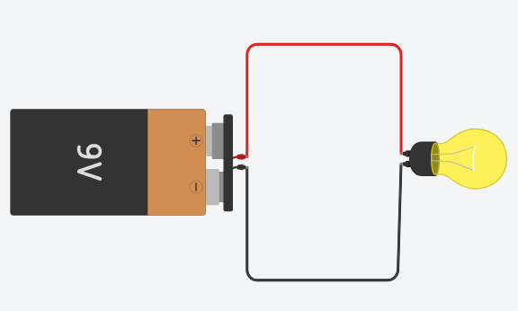
Fonte: imagem criada pelo autor no Autodesk Tinkercad
Corrente elétrica
Definição de corrente elétrica
É o fluxo orientado de carga elétrica em um condutor, e pode ser calculado imaginando a quantidade de carga que atravessa uma área de seção transversal do condutor por unidade de tempo.
\[I = \frac{ Q}{ t}\]
O sentido convencional da corrente é aquele que teria cargas positivas se movendo, mesmo sendo, em geral, as cargas negativas (elétrons) que se movem.
A unidade de medida padrão para a corrente é o Ampère, que significa Couloumbs por segundo. Em símbolos
\[A = \frac{C}{s}\]
Representação de uma corrente elétrica com cargas positivas ou negativas se movendo..

Fonte: And1mu, CC BY-SA 4.0, via Wikimedia Commons


Noções sobre corrente alternada
Na corrente contínua (cc) , o fluxo está sepre em um sentido. Por exemplo, uma lâmpada ligada a uma pila. As polaridades da pilha (fixas) determinam o sentido da corrente.
Por outro lado, na corente alternada (ca) os polos positivos e negativos se alternão periodicamente. Como exemplo, uma lâmpada ligada a uma tomada, com alternações entre 50 e 60 Hz.
Corrente, tensão e potência (Ampère, Volt e Watt)
Cálculo simples de potência
| unidade | símbolo | "definição" | grandeza | símbolo | "definição" |
|---|---|---|---|---|---|
| Joule | \(J\) | \(J = N\cdot m\) | Energia | \(E\) | \(E=F\cdot d\) |
| Coulomb | \(C\) | \(6,25\times10^{18}e\) | Carga Elétrica | \(Q\) | \(Q=\pm\,n\,e\) |
| Watt | \(W\) | \(W= J / s\) | Potência | \(P\) | \(P=E/t\) |
| Hertz | \(Hz\) | Oscilações / s | Frequência | \(f\) | \( f=n/t \) |
| Volt | \(V\) | V = J/C | Tensão elétrica | \(U\) | \(U = E/Q\) |
| Ampère | \(A\) | A = C/s | Corrente elétrica | \(I\) | \(I = Q/t\) |
A potência, energia por carga, pode ser relacionada à corrente e à tensão em um circuito, ou dispositvo eletrônico, por :
\[ P = U\cdot I\]
Demonstração: \( U \cdot I = \frac{E}{Q}\frac{Q}{t} = \frac{E}{t} = P \)
Exemplo
Medições de tensão elátrica (voltagem) e corrente elétrica (amperagem) em um circuito simples.
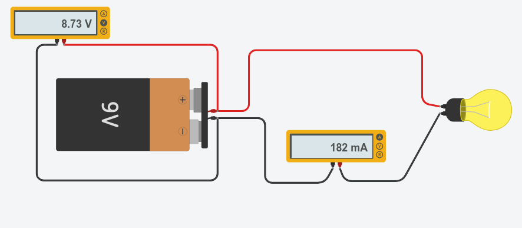
Fonte: imagem criada pelo autor no Autodesk Tinkercad
Para o caso ilustrado na imagem acima, temos:
\( P = U \cdot I = (8,73 v)\cdot (0,182 A) = 1,59 W \)
Lembre-se que potência mede energia por tempo. Assim, a energia fornecida pela fonte é integralmente consumida pela lâmpada, considerando fios ideais. Assim, o cálculo é o mesmo para a potência nos dois dispositivos. Isso mudaria caso o circuito envolva mais de dois componentes.
Associações de compoonentes eletrônicos
Ligações em Série e Paralelo de uma bateria e duas lâmpadas.
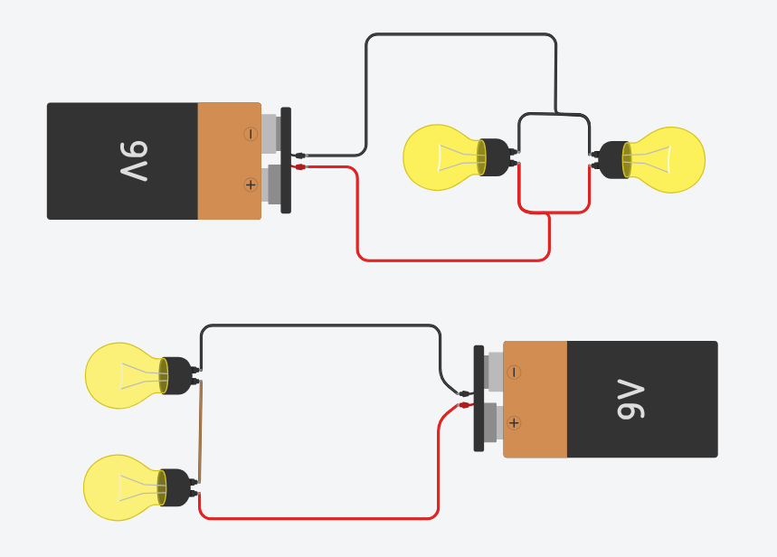
Fonte: imagem criada pelo autor no Autodesk Tinkercad
- Em série
- Mesma corrente \(I\)
- Tenesão de divide \(U = U_1 + U_2\)
- Em paralelo
- Mesma tensão elétrica \(U\)
- Corrente elétrica se divide \(I=I_1+I_2\)
Resistores
Resistência
Resistência é uma propriedade dos condutores de resistir a passagem da corrente.
- Todo condutor possui resistência.
- Quanto menor a resistência, melhor o condutor
- Objetos com alta resistência são chamados resistores, e utilizados para fins de:
- converter energia elétrica em calor;
- reduzir a tensão elétrica em algum trecho de um circuito.
Unidade de medida de resistência é o Ohm, símbolo \(\Omega\)
\[\Omega = \frac{V}{A}\]
Analogia sobre a relação entre Resistência \(\Omega\), tensão \(V\) e corrente \(A\).

Fonte: Elilopes, CC BY-SA 4.0 

Lei de Ohm
- resistores ôhmico:
- resistência constante;
- relação de proporcionalidade direta ente \(U\) e \(I\)
- resistores não ôhmicos:
- resistência não é constante;
- geralmente essa variação se deve ao aumento da temperatura.
Definção de resistência
\( R = \frac{U}{I} \)
Exemplo de resistor ohmico, a constante de proporcionalidade, que é a resistência do resistor, com valor de \( 5\Omega\).
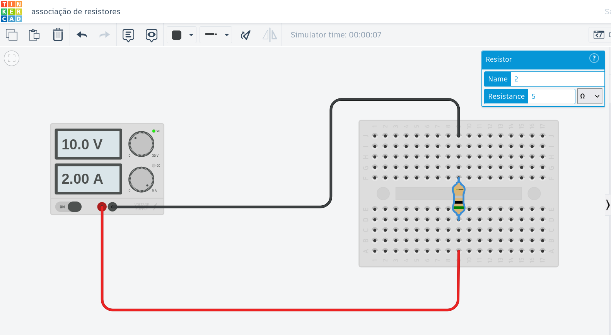
Fonte: imagem criada pelo autor usando a plataforma Autodesk Tinkercad
Resistência equivalente a resistores em série
\[ R_s = R_1 + R_2\]
Ligação de dois resistores de \(5 \Omega\) em série.
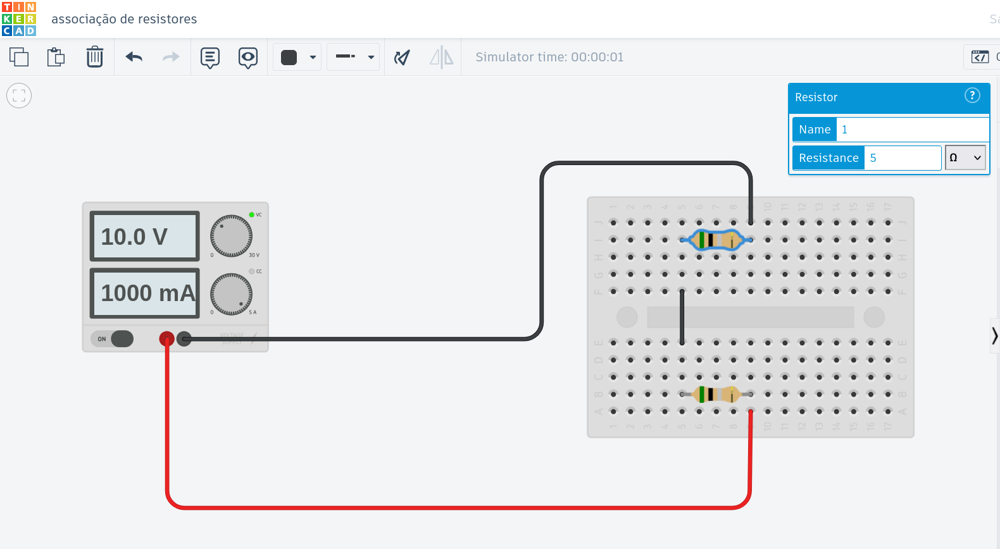
Fonte: imagem criada pelo autor usando a plataforma Autodesk Tinkercad
No caso mais geral (n resistores) teremos
\[R_s = R_1 + \dots R_n\]
Resistência equivalente a resistores em paralelo
\[ \frac{1}{R_p} = \frac{1}{R_1} + \frac{1}{R_2}\]
Ligação de dois resistores de \(5 \Omega\) em paralelo.
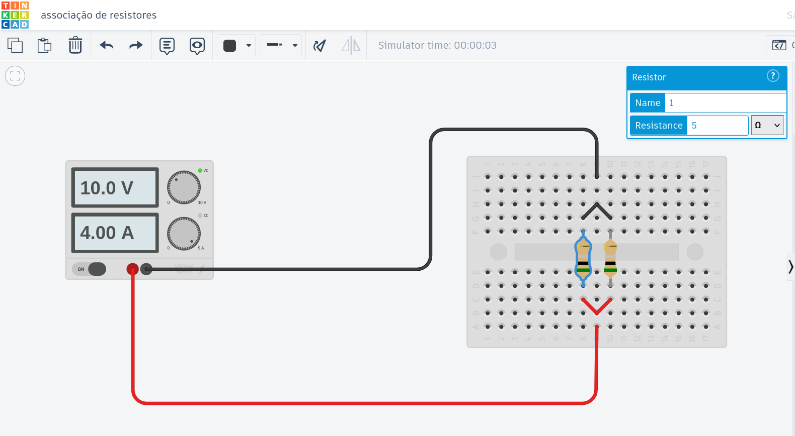
Fonte: imagem criada pelo autor usando a plataforma Autodesk Tinkercad
Par um caso geral, com n resistores em paralelo, teremos:
\[ \frac{1}{R_p} = \frac{1}{R_1} + \dots + \frac{1}{R_n}\]
Ligações mistas de resistores
Resistividade
Simulação Resistência em um Fio - phet.colorado.edu
\( R = \rho \frac{L}{A} \)
onde
- \(\rho \) é a resistividade e caracteriza o material condutor
- \(L\) é o comprimento do condutor
- \(A\) é a área do condutor
| Metal | Resistividade (Ω·m) |
|---|---|
| Prata | 1.59 × 10⁻⁸ |
| Cobre | 1.70 × 10⁻⁸ |
| Ouro | 2.44 × 10⁻⁸ |
| Alumínio | 2.82 × 10⁻⁸ |
| Tungstênio | 5.60 × 10⁻⁸ |
| Ferro | 9.71 × 10⁻⁸ |
| Platina | 10.6 × 10⁻⁸ |
| Chumbo | 22.0 × 10⁻⁸ |
| Mercúrio | 96.0 × 10⁻⁸ |
Capacitores
Simulação com capacitor de placas paralelas.
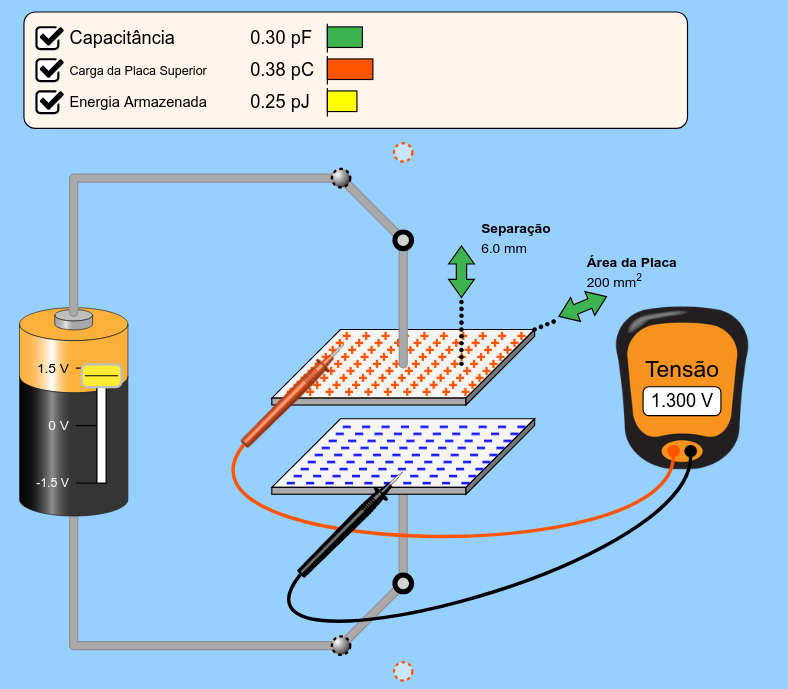
Fonte: imagem criada pelo autor usando a plataforma PHET Interactive Simulations
Descarga de associação de resistores (em série e em paralelo).
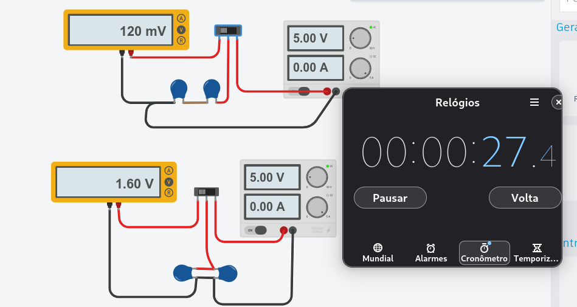
Fonte: imagem criada pelo autor usando a plataforma Projeto no Autodesk Tinkercad
Definição de Capacitância
A capacitância é a razão entre a carga armazenada em uma das placas e a diferença de potencial (tensão) entre elas.
Expressão geral:
\( C = \frac{Q}{V} \)
Unidade no SI:
Farad (F) = Coulomb / Volt (C/V)
Energia Armazenada em um Capacitor
A energia (potencial eletrostática) armazenada no campo elétrico do capacitor é dada pela relação entre carga e tensão.
Fórmulas equivalentes:
\( U = \frac{1}{2} Q V \)
\( U = \frac{1}{2} C V^2 \)
\( U = \frac{Q^2}{2C} \)
Associação de capacitores em Paralelo
- A tensão é a mesma em todos os capacitores.
- A capacitância equivalente é a soma das capacitâncias individuais.
Expressão:
\( C_P = C_1 + C_2\)
ou
\( C_P = C_1 + C_2 + C_3 + \dots + C_n \)
Associação de capacitores em Série
- A carga é a mesma em todos os capacitores.
- O inverso da capacitância equivalente é a soma dos inversos das capacitâncias individuais.
- Expressão:
\( \frac{1}{C_S} = \frac{1}{C_1} + \frac{1}{C_2} \)
ou
\( \frac{1}{C_{S}} = \frac{1}{C_1} + \frac{1}{C_2} + \frac{1}{C_3} + \dots + \frac{1}{C_n} \)
Outros componentes eletrônicos
Diodos

Diodo Emissor de Luz (LED)
Diodo Emissor de Luz (LED) – Fotografia.

Fonte: Wikimedia Commons,
CC BY-SA 3.0, via Wikimedia Commons


Diodo Emissor de Luz (LED) – Símbolo esquemático.

Fonte: Wikimedia Commons,
CC BY-SA 3.0, via Wikimedia Commons


Transistores


Indutores


Eletrônica digital
Simulação de controle de LED com arduino.
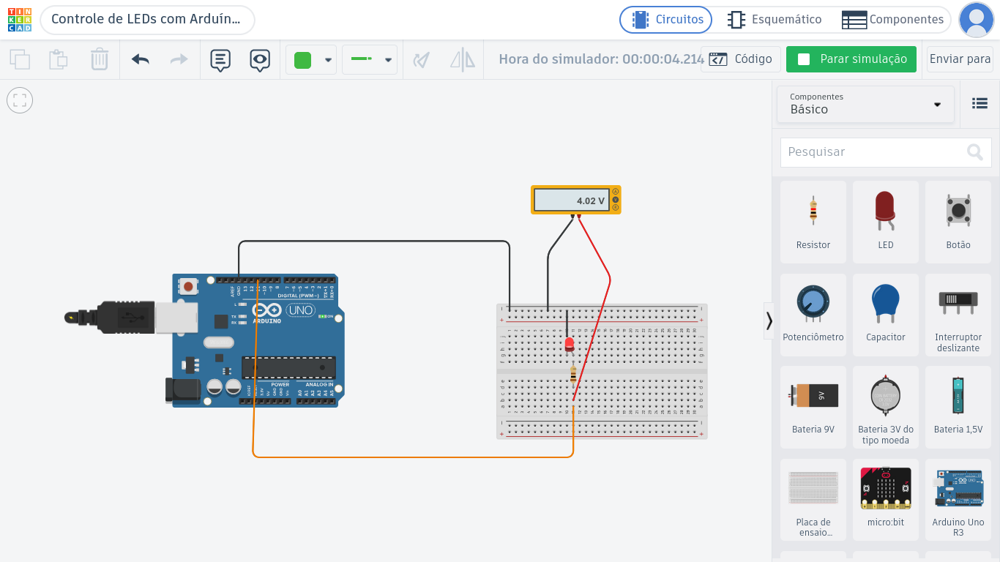
Fonte: imagem criada pelo autor usando a plataforma Autodesk Tinkercad
Programação de controle de LED com arduino.
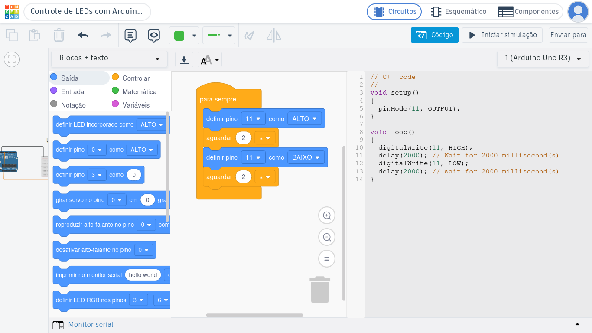
Fonte: imagem criada pelo autor usando a plataforma Autodesk Tinkercad
Magnetismo e Eletricidade
Noções sobre força magnética
Todos nós já tivemos alguma experiência com imãs, e já experimentamos a atração magnética de alguma forma. Sabemos que dois imãs podem se repelir, ou se atrair, a depender das respectivas direções dos seus polos. Assim, há uma semelhança ao que acontece com a força elétrica: os opostos se atraem, e os semelhantes se repelem (pólos magnéticos, ou cargas elétricas, em cada caso).
Outra semelhança é o comportamento quanto à carga e à distância. Nesse caso, três forças fundamentais têm o mesmo comportamento:
I. A força gravitacional é
I.a) proporcional ao produto das massas
\( F \propto M_1 M_2 \)
I.b) inversamente proporcional ao quadrado da distância
\( F \propto \frac{1}{d^2} \)
Força gravitacional entre duas massas à 3,0 km de distância.
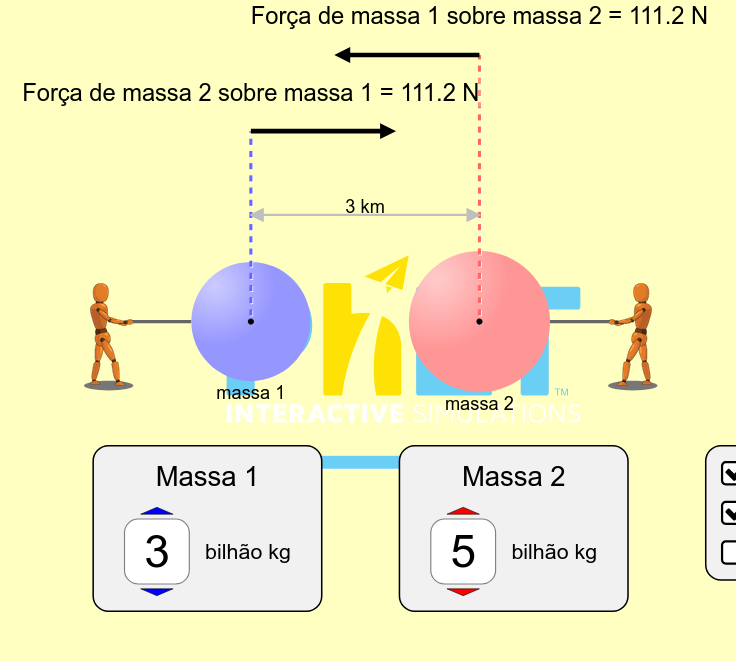
Fonte: criado pelo autor a partir da simulação Gravity Force Lab: Basics - PhET.
Força gravitacional entre duas massas à 6,0 km de distância.
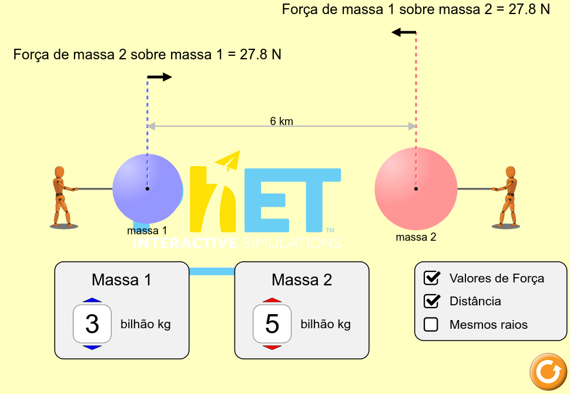
Fonte: criado pelo autor a partir da simulação Gravity Force Lab: Basics - PhET.
Ao dobrar a distância (de 3,0 km para 6,0 km), a força fica quatro vezes menor, o que confirma a dependência com o inverso do quadrado da distância.
II. A força eletrostática é
II.a) proporcional ao produto das cargas
\( F \propto Q_1 Q_2 \)
II.b) inversamente proporcional ao quadrado da distância
\( F \propto \frac{1}{d^2} \)
Força elétrica entre dois objetos à 4 cm de distância.
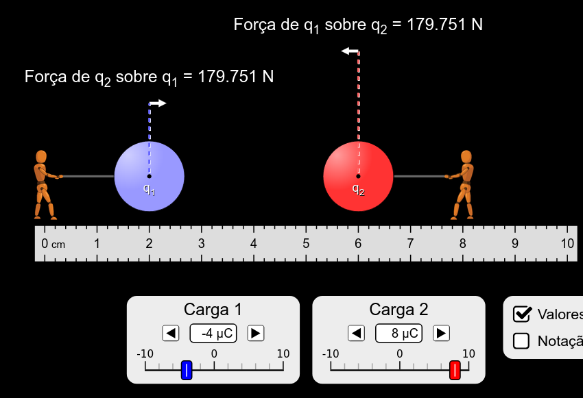
Fonte: criado pelo autor a partir da simulação Lei de Coulomb - PhET.
Força elétrica entre dois objetos à 2 cm de distância.
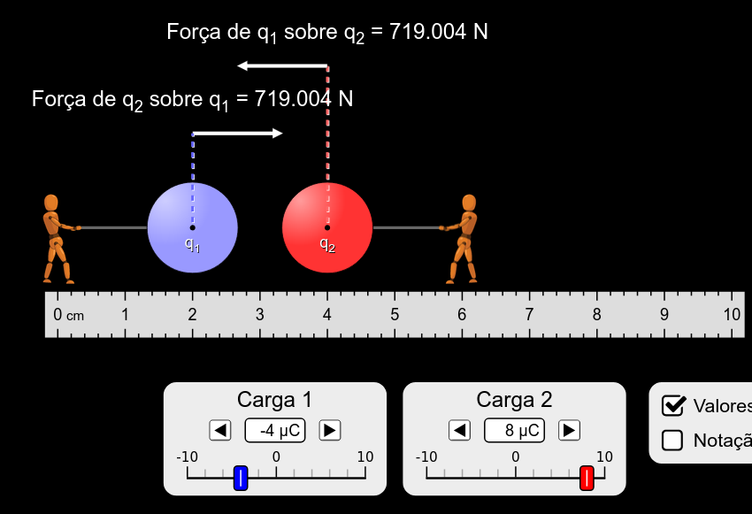
Fonte: criado pelo autor a partir da simulação Lei de Coulomb - PhET.
III. A força magnética é
III.a) proporcional ao produto das "cargas magnéticas"
\( F \propto m_1 m_2 \)
III.b) inversamente proporcional ao quadrado da distância
\( F \propto \frac{1}{d^2} \)
Mas, aqui, o que seria essa carga magnética? Ao começar a investigar isso, podemos também perceber uma diferença entre essa força e as anteriores.
Se você quebrar um ímã ao meio, tentando separar o polo sul do polo norte, você terá dois ímãs, mas cada um deles com seu polo sul e seu polo norte.
Esse comportamento pode ser expresso pela seguinte afirmação
Não existe monopolo magnético!
Ou seja, de forma mais simplista
Não é possível ter uma carga magnética (como um ímã) com apenas um polo (sul ou norte).
Ímãs e campo magnético
Um ímã é um corpo que possui dois polos, norte e sul, e que exerce força magnética sobre outros ímãs ou sobre materiais ferromagnéticos, como o ferro, o níquel e o cobalto. Uma bússola nada mais é do que uma pequena agulha imantada que se orienta na presença de um campo magnético.
O campo magnético (\( \vec{B} \)) é a região do espaço ao redor de um ímã (ou de uma corrente elétrica) onde ele pode exercer força magnética. Sua unidade de medida no SI é o tesla (\(T\)).
As linhas de campo magnético saem do polo norte e entram no polo sul, por fora do ímã, formando sempre linhas fechadas. Isso é consequência de não existir monopolo magnético.
Bússola próxima a um ímã permanente.
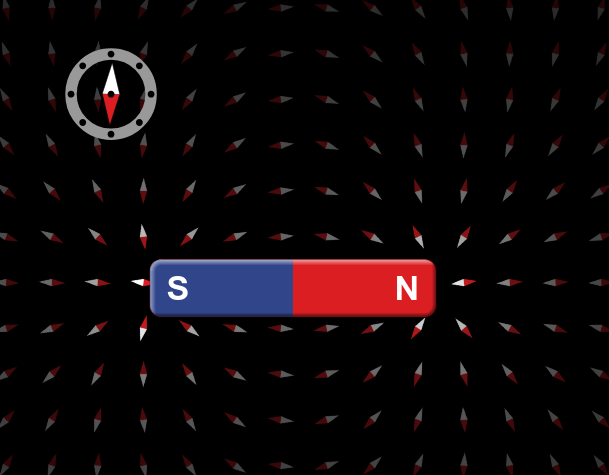
Fonte: criado pelo autor a partir da simulação Ímã e Bússola - PhET.
Bússola orientada pelo campo magnético da Terra.
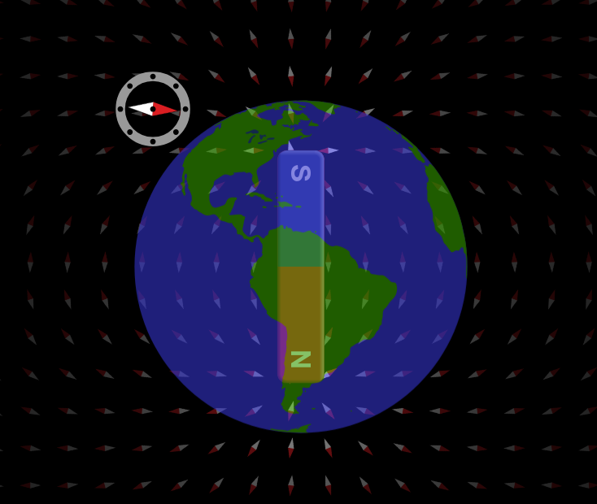
Fonte: criado pelo autor a partir da simulação Ímã e Bússola - PhET.
O campo magnético da Terra (campo geomagnético) é o que orienta a agulha da bússola. O polo norte geográfico está próximo do polo sul magnético da Terra, e é por isso que o polo norte da agulha aponta nessa direção.
Magnetismo e corrente elétrica
Em 1820, o físico dinamarquês Hans Christian Oersted observou que a agulha de uma bússola era desviada quando colocada próxima a um fio percorrido por corrente elétrica. Esse experimento mostrou que cargas elétricas em movimento geram campo magnético.
Toda corrente elétrica produz um campo magnético ao seu redor!
Essa descoberta unificou a eletricidade e o magnetismo, dando origem ao eletromagnetismo. Um fio enrolado em forma de hélice (bobina ou solenoide) produz, no seu interior, um campo magnético semelhante ao de um ímã em barra.
Corrente elétrica gerando campo magnético.
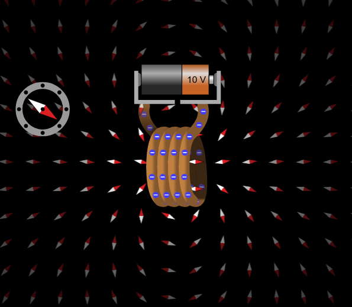
Fonte: criado pelo autor a partir da simulação Ímãs e Eletroímãs - PhET.
Bobina ligada a uma pilha e seu campo magnético.
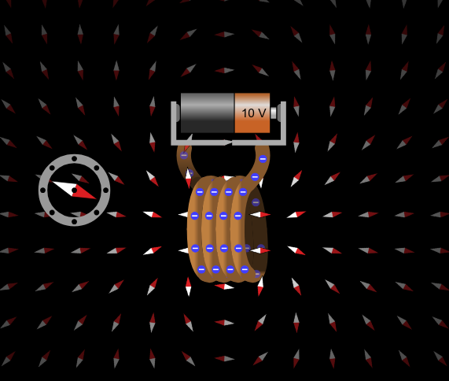
Fonte: criado pelo autor a partir da simulação Ímãs e Eletroímãs - PhET.
Campo magnético no interior de uma bobina com 2 voltas.
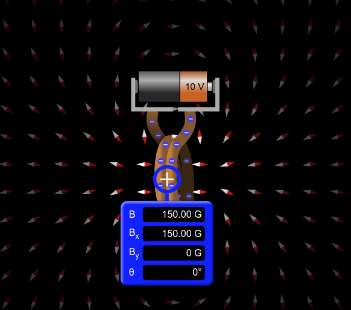
Fonte: criado pelo autor a partir da simulação Ímãs e Eletroímãs - PhET.
Campo magnético no interior de uma bobina com 4 voltas.
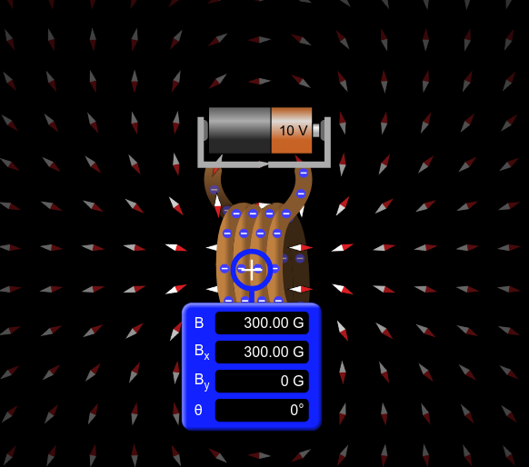
Fonte: criado pelo autor a partir da simulação Ímãs e Eletroímãs - PhET.
Comparando as duas últimas figuras (mesma corrente e mesmo núcleo), vemos que, dobrando o número de voltas, o campo magnético no interior da bobina também dobra. Assim, o campo é proporcional ao número de voltas da bobina.
Motor elétrico
O motor elétrico é um dispositivo que converte energia elétrica em energia mecânica (movimento), aproveitando a força que um campo magnético exerce sobre um condutor percorrido por corrente elétrica.
Em um motor, a corrente elétrica percorre uma espira imersa em um campo magnético. A força magnética sobre os lados da espira produz um torque, que a faz girar.
Os motores de corrente contínua (CC) são alimentados por tensão contínua, como pilhas e baterias. Já os motores de corrente alternada (CA) são alimentados pela rede elétrica, cuja tensão varia periodicamente, o que mantém o motor girando de forma contínua.
Motor elétrico – Princípio de funcionamento.

Fonte: Wikimedia Commons, domínio público, via Wikimedia Commons.
Motor de corrente contínua (CC).
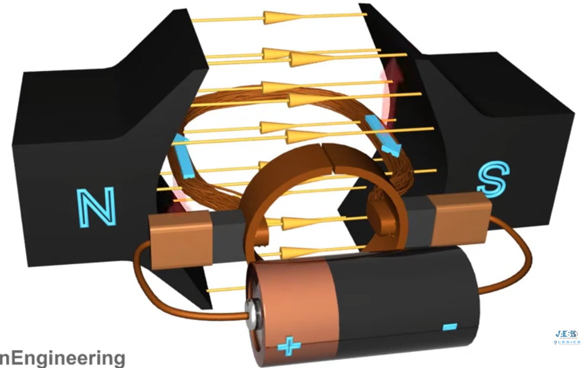
Fonte: Motor CC, Como funciona? - Canal JAES Company Português.
Indução magnética
Assim como uma corrente elétrica gera um campo magnético, o contrário também acontece: um campo magnético variável pode gerar corrente elétrica em um circuito. Esse fenômeno é chamado de indução eletromagnética e foi descoberto por Michael Faraday em 1831.
\begin{equation} \varepsilon = -\frac{\Delta \Phi_B}{\Delta t} \end{equation}Lei de Faraday: a força eletromotriz (\( \varepsilon \)) induzida em um circuito é proporcional à taxa de variação do fluxo magnético (\( \Phi_B \)) que o atravessa.
O sinal negativo é consequência da Lei de Lenz: a corrente induzida sempre se opõe à variação do fluxo magnético que a originou.
Para explorar esse fenômeno, veja a simulação Laboratório Eletromagnético de Faraday - phet.colorado.edu.
Gerador elétrico
O gerador elétrico é o dispositivo que converte energia mecânica em energia elétrica, funcionando como o oposto do motor. Ao girar uma espira (ou bobina) dentro de um campo magnético, o fluxo magnético que a atravessa varia e, pela Lei de Faraday, surge uma força eletromotriz induzida — ou seja, uma corrente elétrica.
Motor: energia elétrica \(\rightarrow\) energia mecânica.
Gerador: energia mecânica \(\rightarrow\) energia elétrica.
Assim, motores e geradores são essencialmente o mesmo dispositivo, operando em sentidos opostos de conversão de energia.
As figuras abaixo mostram como a Lei de Indução de Faraday explica o funcionamento de um gerador. No exemplo ilustrado, a rotação do ímã varia o campo magnético que atravessa a bobina, gerando uma tensão elétrica medida pelo voltímetro. Como o ímã gira continuamente, a tensão assume valores ora positivos, ora negativos: esse é um exemplo de gerador de corrente alternada.
Giro do ímã gerando tensão elétrica positiva (do ponto de vista do voltímetro acoplado).
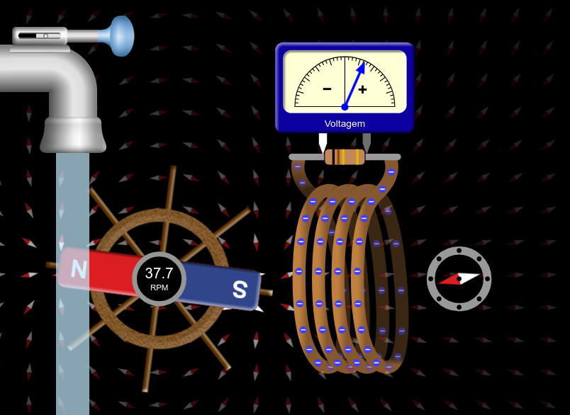
Fonte: criado pelo autor a partir da simulação Laboratório Eletromagnético de Faraday - PhET.
Giro do ímã gerando tensão elétrica negativa (do ponto de vista do voltímetro acoplado).
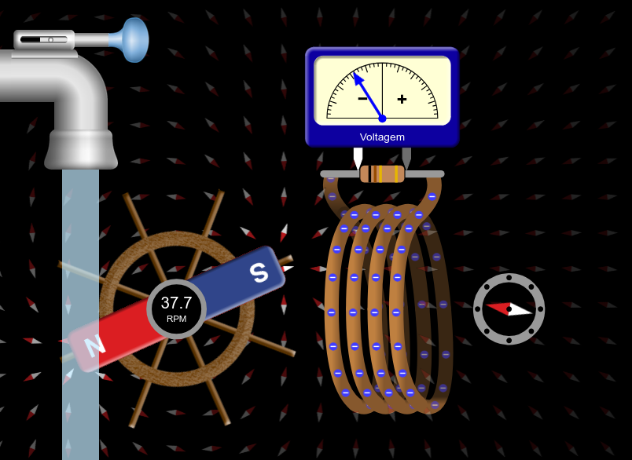
Fonte: criado pelo autor a partir da simulação Laboratório Eletromagnético de Faraday - PhET.
Materiais magnéticos
Quanto ao comportamento na presença de um campo magnético, os materiais podem ser classificados em:
- Ferromagnéticos: são fortemente atraídos por ímãs e podem se tornar ímãs permanentes. Exemplos: ferro, níquel, cobalto e suas ligas.
- Paramagnéticos: são fracamente atraídos por ímãs. Exemplos: alumínio e platina.
- Diamagnéticos: são fracamente repelidos por ímãs. Exemplos: cobre, água e bismuto.
- Ímãs permanentes
- Neodímio-Ferro-Boro (NdFeB)
- Samário-Cobalto (SmCo)
- Eletroímãs
- Ímãs temporários produzidos pela passagem de corrente elétrica em uma bobina, geralmente com um núcleo de ferro.
Terras raras: os ímãs mais fortes do mundo
Óxidos de terras raras (sentido horário, a partir do topo): praseodímio, cério, lantânio, neodímio, samário e gadolínio.

Fonte: Peggy Greb, USDA,
Public domain, via Wikimedia Commons


Quando você usa fones de ouvido, um alto-falante ou o motor de um veículo elétrico, provavelmente está a poucos centímetros de um ímã feito com terras raras. Esses são os ímãs permanentes mais fortes que existem, e ajudam a mostrar que o estudo do magnetismo está muito presente na tecnologia atual.
O que são terras raras?
Terras raras são 17 elementos químicos: os 15 lantanídeos, além do escândio (Sc) e do ítrio (Y). Apesar do nome, não são tão raras assim na crosta terrestre. O cério, por exemplo, é mais abundante que o cobre. A dificuldade está em encontrá-los concentrados e, principalmente, em separá-los uns dos outros, pois têm propriedades químicas muito parecidas.
Alguns exemplos e seus usos:
- Neodímio (Nd) e praseodímio (Pr): ímãs muito fortes.
- Samário (Sm): ímãs que suportam temperaturas mais altas.
- Disprósio (Dy) e térbio (Tb): ajudam o ímã a não perder força quando esquenta.
- Európio (Eu) e térbio (Tb): telas e lâmpadas.
- Cério (Ce) e lantânio (La): catalisadores e polimento de vidros.
Curiosidade: terras raras não são "raras" como o ouro. O problema é que elas aparecem misturadas e são difíceis de separar. Por isso, um país pode ter reservas grandes e, ao mesmo tempo, importar ímãs prontos.
Por que esses ímãs são tão fortes?
Em materiais ferromagnéticos, como o ferro, os elétrons se comportam como pequenos ímãs. Em cada região do material, chamada de domínio magnético, esses pequenos ímãs apontam para a mesma direção. Quando o material é imantado, os domínios se alinham e o campo magnético se soma.
Nos ímãs de terras raras, os elétrons da camada 4f desses elementos ajudam a fixar a direção da magnetização, enquanto o ferro e o cobalto fornecem boa parte do magnetismo. Além disso, a estrutura do cristal "prende" essa magnetização em uma direção preferencial, dificultando que ela se desorganize. Essa combinação permite construir ímãs de neodímio-ferro-boro (NdFeB) muito menores e mais fortes que os ímãs de ferro comuns.
O preço dessa força aparece quando queremos desmagnetizar o ímã: é preciso um campo externo muito intenso. Dizemos que esses materiais têm alta coercividade. Em um ímã de ferrite (óxido de ferro com bário ou estrôncio), isso é bem mais fácil.
Onde eles aparecem no dia a dia?
- Motores de veículos elétricos e de bicicletas elétricas.
- Aerogeradores (turbinas eólicas), que transformam movimento em energia elétrica.
- Fones de ouvido, alto-falantes e microfones.
- Discos rígidos de computadores e pequenos motores de eletrodomésticos.
Repare que todos esses exemplos dependem do que estudamos neste capítulo: força magnética, motores, geradores e indução. Os ímãs de terras raras não substituem o eletromagnetismo; eles tornam os dispositivos mais compactos e eficientes.
O Brasil e as terras raras
O Brasil está entre os países com as maiores reservas de terras raras do mundo. Há depósitos importantes em Minas Gerais e em Goiás, e pesquisas recentes indicam potencial também no Amazonas, na região de Pitinga. Mesmo assim, a maior parte da separação e do refino é feita na China, o que torna esses elementos estratégicos para a indústria e para as relações internacionais.
Essa é uma boa oportunidade para pensar em ciência, economia e meio ambiente ao mesmo tempo: extrair e separar terras raras pode gerar resíduos e consumir muita energia. Além disso, minerais associados a elas, como a monazita, podem conter tório, que exige cuidados especiais. Por isso, a reciclagem de ímãs de discos rígidos, motores e turbinas é um tema cada vez mais importante.
Para lembrar
- Terras raras: 15 lantanídeos + escândio + ítrio.
- NdFeB e SmCo são ímãs permanentes de alto desempenho.
- Os elétrons 4f e a estrutura do cristal ajudam a explicar a força e a resistência à desmagnetização.
- Aplicações: motores, geradores, turbinas eólicas e eletrônicos.
- O Brasil tem reservas, mas o domínio do refino é estratégico.
Veja também a lista de exercícios de verdadeiro ou falso sobre terras raras.
Resumo
- Comparação entre forças: gravitacional, elétrica e magnética
- Campo magnético
- Origem do magnetismo
- Movimento da carga elétrica gerando magnetismo
- Lei de Biot-Savart
- Lei de Ampère
- Magnetismo intrínseco das partículas elementares: SPIN
- Movimento da carga elétrica gerando magnetismo
- Magnetismo gerando corrente elétrica
- Lei da indução de Faraday
- Motor elétrico
- Gerador elétrico
- Terras raras e ímãs de alto desempenho
Ondas eletromagnéticas
Natureza da luz
As relações entre a eletricidade e o magnetismo foram sintetizadas por James Clerk Maxwell em quatro equações, as Equações de Maxwell. Não vamos escrevê-las aqui, pois sua forma matemática foge do escopo deste resumo, mas a ideia central pode ser resumida assim:
- Campos elétricos variáveis geram campos magnéticos variáveis;
- Campos magnéticos variáveis geram campos elétricos variáveis.
Essa dependência mútua permite que os campos se sustentem e se propaguem pelo espaço, formando uma onda eletromagnética. Diferente do som, que precisa de um meio material para se propagar, a onda eletromagnética também se propaga no vácuo.
Na onda eletromagnética, o campo elétrico (\(E\)) e o campo magnético (\(B\)) oscilam perpendicularmente entre si e também à direção de propagação. Por isso ela é uma onda transversal. A onda transporta energia, e não matéria, e no vácuo viaja com a velocidade
\begin{equation} c \approx 3,0\times 10^{8} \, \text{m/s} \end{equation}que é a velocidade da luz no vácuo.
Onda eletromagnética: os campos elétrico e magnético oscilam perpendicularmente entre si e à direção de propagação.

Fonte: Lookang, CC BY-SA 3.0, via Wikimedia Commons.
Como em qualquer onda, podemos relacionar a velocidade (\(v\)), o comprimento de onda (\(\lambda\)) e a frequência (\(f\)):
\begin{equation} v = \lambda f \end{equation}No vácuo, essa relação fica \(c = \lambda f\). A frequência é determinada pela fonte que produz a onda. Quando a onda passa de um meio para outro, sua frequência não muda, mas sua velocidade e seu comprimento de onda podem mudar.
Espectro eletromagnético
Todas as ondas eletromagnéticas têm a mesma natureza. O que as diferencia é a frequência e, consequentemente, o comprimento de onda. O conjunto de todos os tipos de onda eletromagnética é chamado de espectro eletromagnético.
| Região | Comprimento de onda (aprox.) | Frequência (aprox.) | Exemplos e aplicações |
|---|---|---|---|
| Rádio | maior que 1 m | menor que 300 MHz | Rádio, TV, celular |
| Micro-ondas | 1 mm a 1 m | 300 MHz a 300 GHz | Forno de micro-ondas, Wi-Fi, radar |
| Infravermelho | 700 nm a 1 mm | 300 GHz a \(4,3\times 10^{14}\) Hz | Controle remoto, câmera térmica, aquecimento |
| Luz visível | 400 nm a 700 nm | \(4,3\times 10^{14}\) a \(7,5\times 10^{14}\) Hz | Visão humana, fotossíntese |
| Ultravioleta | 10 nm a 400 nm | \(7,5\times 10^{14}\) a \(3\times 10^{16}\) Hz | Bronzeamento, esterilização, vitamina D |
| Raios X | 0,01 nm a 10 nm | \(3\times 10^{16}\) a \(3\times 10^{19}\) Hz | Radiografia, tomografia |
| Raios gama | menor que 0,01 nm | maior que \(3\times 10^{19}\) Hz | Medicina nuclear, radioterapia, astronomia |
As fronteiras entre as regiões são aproximadas e se sobrepõem. O que importa é a ordem: das ondas de rádio, com maior comprimento de onda, aos raios gama, com o menor.
A luz visível ocupa uma faixa muito estreita do espectro, entre aproximadamente 400 nm e 700 nm. Dentro dela, as cores vão do vermelho (maior comprimento de onda) ao violeta (menor comprimento de onda).
O espectro eletromagnético completo, das ondas de rádio aos raios gama.

Fonte: Khemis, CC BY-SA 4.0, via Wikimedia Commons.
Uma diferença importante para a saúde é que a radiação ultravioleta, os raios X e os raios gama são radiações ionizantes: têm energia suficiente para arrancar elétrons de átomos e moléculas, podendo danificar células. Já as ondas de rádio, as micro-ondas e o infravermelho são não ionizantes. Isso não significa que sejam inofensivas em qualquer intensidade, mas o risco é de outra natureza (aquecimento, por exemplo).
Emissão térmica: todo corpo irradia
Cargas elétricas em movimento acelerado emitem ondas eletromagnéticas. Como toda a matéria é formada por cargas e está em constante agitação térmica, então:
Todo corpo emite radiação eletromagnética devido à sua temperatura.
Essa emissão é chamada de radiação térmica. O espectro emitido é contínuo e depende da temperatura do corpo. Duas leis resumem esse comportamento:
Lei de Wien: quanto maior a temperatura, menor o comprimento de onda em que a emissão é máxima.
\begin{equation} \lambda_{\text{máx}} T \approx 2,9\times 10^{-3} \, \text{m}\cdot\text{K} \end{equation}Lei de Stefan-Boltzmann: a potência total emitida cresce muito rapidamente com a temperatura.
\begin{equation} P = \sigma A T^{4} \end{equation}em que \(\sigma \approx 5,67\times 10^{-8} \, \text{W}\cdot\text{m}^{-2}\cdot\text{K}^{-4}\) e \(A\) é a área da superfície. Se a temperatura dobra, a potência emitida fica cerca de 16 vezes maior.
Essas leis explicam por que um pedaço de ferro aquecido passa de vermelho escuro a laranja e depois a branco, e por que o Sol (aproximadamente 5800 K) emite muita luz visível, enquanto a Terra (aproximadamente 300 K) emite principalmente infravermelho. O modelo ideal usado para estudar esse comportamento é o corpo negro, que absorve e emite toda a radiação que recebe.
Espectro eletromagnético com exemplos, frequências e temperaturas típicas de emissão de corpos negros.

Fonte: Villate (versão original de Inductiveload), Domínio público, via Wikimedia Commons.
Absorção, reflexão e emissão
Quando uma onda eletromagnética atinge um material, parte de sua energia pode ser refletida, parte absorvida e parte transmitida. A energia total se conserva:
Energia incidente = energia refletida + energia absorvida + energia transmitida.
A absorção transfere energia para o material, aumentando sua energia interna e, em geral, sua temperatura. É o que acontece com a água no forno de micro-ondas e com o solo iluminado pelo Sol. Por outro lado, um corpo aquecido também emite radiação. Em equilíbrio, um bom absorvedor é também um bom emissor, e uma superfície que reflete bem emite pouco. Por isso superfícies escuras esquentam mais ao Sol e garrafas térmicas usam paredes espelhadas.
A reflexão é o que nos permite ver os objetos iluminados. Em uma superfície opaca, a cor que enxergamos corresponde às frequências que são refletidas de forma difusa até nossos olhos. Um objeto vermelho reflete principalmente o vermelho e absorve a maior parte das outras cores; um objeto branco reflete grande parte da luz visível; um objeto negro absorve a maior parte dela. Ainda assim, um objeto negro pode emitir bem no infravermelho, o que é detectado por câmeras térmicas.
A transmissão ocorre quando a onda atravessa o material. O vidro, por exemplo, é transparente à luz visível, mas absorve boa parte do infravermelho. Esse comportamento está na base do efeito estufa: a atmosfera deixa passar a luz visível do Sol, mas absorve e reemite parte do infravermelho emitido pela superfície da Terra, o que ajuda a manter o planeta aquecido. Gases como vapor de água, gás carbônico e metano participam desse processo.
Além disso, a luz pode ser espalhada ao interagir com partículas e moléculas. O espalhamento da luz azul pela atmosfera é o que dá a cor do céu durante o dia; ao amanhecer e ao anoitecer, a luz atravessa uma camada maior de ar, a luz azul é espalhada para fora do caminho e predominam os tons avermelhados.
Efeito estufa
O efeito estufa é consequência direta da interação seletiva da radiação com a atmosfera. A luz solar chega principalmente na faixa visível, que atravessa a atmosfera e aquece a superfície da Terra. Aquecida, a superfície emite radiação térmica, sobretudo no infravermelho. Gases como vapor de água, gás carbônico (\(\text{CO}_2\)), metano (\(\text{CH}_4\)), óxido nitroso (\(\text{N}_2\text{O}\)) e CFCs absorvem parte dessa radiação e a reemitem em todas as direções, inclusive de volta para a superfície. Com isso, menos energia escapa para o espaço e a temperatura média do planeta se mantém mais alta do que seria sem esses gases.
Esse aquecimento natural é essencial à vida: sem ele, a Terra seria um lugar muito frio. O problema atual é a intensificação do efeito estufa pela ação humana — queima de combustíveis fósseis, desmatamento e outras atividades —, que aumenta a concentração desses gases na atmosfera. Como eles passam a absorver mais infravermelho, o balanço de energia do planeta se altera e a temperatura média aumenta. Vale não confundir o efeito estufa com o buraco na camada de ozônio: são fenômenos diferentes, embora ambos envolvam a atmosfera e a radiação.
O efeito estufa explicado e ilustrado: a radiação solar aquece a superfície, e parte do infravermelho emitido é absorvida pelos gases da atmosfera.

Fonte: EPTrilhas (finalização: Djulia dos Santos e Maria Augusta Scopel Bohner), CC BY 4.0, via Wikimedia Commons.
A figura a seguir compara, de forma ilustrativa, a contribuição relativa de alguns gases para o efeito estufa: \(\text{CO}_2\) (55%), CFCs (24%), metano (15%) e óxido nitroso (6%). O vapor de água, embora não apareça no gráfico, é o gás de efeito estufa mais abundante na atmosfera, mas sua concentração varia muito com a temperatura e a região.
Contribuição relativa de alguns gases para o efeito estufa.

Fonte: Antonín Slejška, CC BY-SA 3.0, via Wikimedia Commons.
Para lembrar
- Ondas eletromagnéticas são formadas por campos elétricos e magnéticos oscilantes, perpendiculares entre si e à propagação.
- Elas se propagam no vácuo com velocidade \(c \approx 3,0\times 10^{8} \, \text{m/s}\).
- Vale \(v = \lambda f\); a frequência é determinada pela fonte.
- O espectro eletromagnético vai das ondas de rádio aos raios gama.
- A luz visível é apenas uma pequena parte do espectro (400 nm a 700 nm).
- Todo corpo emite radiação térmica; quanto maior a temperatura, maior a potência emitida e menor o comprimento de onda predominante.
- Ao atingir a matéria, a radiação pode ser refletida, absorvida ou transmitida; a cor dos objetos depende da luz refletida.
- UV, raios X e raios gama são radiações ionizantes.
- O efeito estufa é natural e essencial à vida: a atmosfera deixa passar a luz visível e absorve parte do infravermelho emitido pela superfície. Sua intensificação pela ação humana tende a elevar a temperatura média do planeta.
Veja também a lista de exercícios de verdadeiro ou falso sobre eletromagnetismo.
Física moderna
No fim do século XIX, a Física clássica parecia ter explicado quase tudo. A mecânica de Newton descrevia o movimento e o eletromagnetismo de Maxwell descrevia a luz. Porém, alguns experimentos envolvendo a luz e a matéria não podiam ser explicados com essas teorias. Foi dessa crise que nasceram a teoria quântica e a relatividade, bases da Física moderna.
Origens da Física Moderna
A crise da Física clássica
A Física clássica tinha dois pilares: a mecânica, para o movimento dos corpos, e o eletromagnetismo, para a luz e os fenômenos elétricos. Nesse modelo, a luz era uma onda contínua e a energia podia variar de forma contínua. O problema é que essa ideia não explicava certos resultados experimentais, como a radiação emitida por corpos aquecidos e a interação da luz com os metais. Para resolver essas contradições, foi preciso abandonar a ideia de que tudo na natureza é contínuo.
Quantização da energia
Em 1900, Max Planck propôs que a energia emitida ou absorvida pela matéria não era contínua, mas vinha em pacotes pequenos e bem definidos, chamados quanta. A energia de cada pacote depende da frequência da radiação:
\begin{equation} E = hf \end{equation}em que \(h \approx 6,63\times 10^{-34} \, \text{J}\cdot\text{s}\) é a constante de Planck e \(f\) é a frequência. Quanto maior a frequência, maior a energia de cada quantum. Em 1905, Albert Einstein estendeu essa ideia à própria luz, dizendo que ela também é formada por pacotes de energia, mais tarde chamados de fótons.
Radiação do corpo negro
Um corpo negro é um modelo ideal que absorve e emite toda a radiação que recebe. Ao estudar a luz emitida por ele em diferentes temperaturas, a teoria clássica previa um crescimento absurdo da energia emitida em frequências muito altas, o que ficou conhecido como catástrofe do ultravioleta. A hipótese de Planck, com a energia quantizada, ajustou os dados experimentais e mostrou que a Física clássica não era suficiente nesse domínio.
Curvas de emissão de um corpo negro em diferentes temperaturas.

Fonte: Darth Kule, Domínio público, via Wikimedia Commons.
Efeito fotoelétrico
Quando a luz incide sobre um metal, ela pode arrancar elétrons de sua superfície. Esse é o efeito fotoelétrico. A teoria ondulatória previa que bastaria aumentar a intensidade da luz para arrancar elétrons, e que a energia deles cresceria com a intensidade. Os experimentos, porém, mostraram outra coisa: só há emissão acima de uma frequência mínima, e a energia dos elétrons depende da frequência da luz, não da intensidade. A intensidade apenas aumenta a quantidade de elétrons arrancados.
Einstein explicou o fenômeno considerando a luz como um conjunto de fótons. Cada fóton transfere sua energia \(hf\) a um único elétron. Parte dessa energia é usada para vencer a atração do metal e o restante vira energia cinética do elétron. Se \(hf\) for menor que esse valor mínimo, nenhum elétron escapa, por mais intensa que seja a luz.
Efeito fotoelétrico: fótons de luz arrancam elétrons de um metal.

Fonte: Ponor, CC BY-SA 4.0, via Wikimedia Commons.
Efeito Compton
No efeito Compton, raios X atingem elétrons e são espalhados com comprimento de onda maior do que o original. Se a luz fosse apenas uma onda, esse deslocamento não deveria ocorrer. Tratando a luz como partícula, com energia e quantidade de movimento, o fenômeno é explicado como uma colisão: o fóton transfere parte de sua energia ao elétron e sai com menos energia, ou seja, com maior comprimento de onda.
Espalhamento Compton: o fóton colide com o elétron e perde energia.

Fonte: JabberWok, CC BY-SA 3.0, via Wikimedia Commons.
Para lembrar
- A Física clássica não explicava a radiação do corpo negro, o efeito fotoelétrico e o efeito Compton.
- A energia é quantizada: \(E = hf\), com \(h\) sendo a constante de Planck.
- A luz pode se comportar como onda e também como partícula (fóton).
- Essas ideias deram origem à Mecânica Quântica.
Relatividade restrita
A Relatividade Restrita foi proposta por Einstein em 1905 e trata de observadores em movimento retilíneo e uniforme, isto é, sem aceleração. Ela se apoia em dois postulados:
- As leis da Física são as mesmas em todos os referenciais inerciais.
- A velocidade da luz no vácuo é a mesma para todos os observadores, não importando o movimento da fonte ou do observador.
O segundo postulado é o mais estranho: se você corre em direção a um feixe de luz, ainda mede a mesma velocidade \(c\) que mediria parado. Para que isso seja possível, o tempo e o espaço deixam de ser absolutos. Cada observador tem seu próprio tempo e seu próprio espaço, e até a ideia de "ao mesmo tempo" passa a depender do referencial.
Dois referenciais em movimento relativo: cada um tem seu próprio tempo e espaço.

Fonte: Krea, CC BY-SA 3.0, via Wikimedia Commons.
Dilatação do tempo
Um relógio em movimento em relação a um observador funciona mais devagar do que um relógio parado em relação a ele. Esse efeito é chamado de dilatação do tempo e é tanto maior quanto mais próxima da velocidade da luz for a velocidade relativa. O fator que mede essa diferença é
\begin{equation} \gamma = \frac{1}{\sqrt{1 - v^{2}/c^{2}}} \end{equation}Assim, \(\Delta t = \gamma\,\Delta t_0\), em que \(\Delta t_0\) é o intervalo medido pelo relógio em repouso. Para velocidades comuns, \(\gamma\) é praticamente igual a 1 e o efeito é imperceptível. Para velocidades próximas de \(c\), o tempo passa a se dilatar de forma significativa. É por isso que múons criados na alta atmosfera chegam até o solo: para eles, o tempo de decaimento parece maior.
Contração do espaço
O comprimento de um objeto medido por um observador que o vê em movimento é menor na direção do movimento:
\begin{equation} L = \frac{L_0}{\gamma} \end{equation}Essa contração não é uma compressão física do objeto, mas consequência de como comprimentos e intervalos de tempo são medidos em referenciais diferentes. As dimensões perpendiculares ao movimento não mudam.
Equivalência massa-energia
Einstein mostrou que massa e energia estão relacionadas:
\begin{equation} E = mc^{2} \end{equation}Como \(c\) é muito grande, uma massa pequena corresponde a uma energia enorme. Isso explica a grande quantidade de energia liberada nas reações nucleares e na fusão que ocorre no Sol. Massa não é algo "separado" da energia: é uma forma de energia.
Para lembrar
- A velocidade da luz é a mesma para todos os observadores inerciais.
- O tempo e o espaço são relativos; a simultaneidade também.
- Relógios em movimento atrasam (dilatação do tempo).
- Comprimentos se contraem na direção do movimento.
- Massa e energia são equivalentes: \(E = mc^{2}\).
- Nenhum corpo com massa pode atingir a velocidade da luz.
Relatividade geral
A Relatividade Geral, publicada por Einstein em 1915, amplia a Relatividade Restrita para referenciais acelerados e inclui a gravidade. A ideia central é o princípio da equivalência: localmente, é impossível distinguir um referencial acelerado de um campo gravitacional. Uma pessoa dentro de um elevador fechado não sabe se está parada na Terra ou acelerando no espaço.
A partir disso, Einstein propôs que a gravidade não é uma força que puxa os corpos à distância, mas a curvatura do espaço-tempo causada pela massa e pela energia. Corpos e luz não são "puxados": eles seguem o caminho mais natural possível nesse espaço-tempo curvo. Em uma frase famosa, a matéria diz ao espaço-tempo como se curvar, e o espaço-tempo diz à matéria como se mover.
Representação da curvatura do espaço-tempo causada por um corpo de grande massa.

Fonte: Johnstone, CC BY-SA 3.0, via Wikimedia Commons.
A Relatividade Geral explica e prevê vários fenômenos:
- A luz de estrelas distantes se curva ao passar perto do Sol, o que foi observado no eclipse solar de 29 de maio de 1919, em duas expedições: uma em Sobral, no Ceará (Brasil), e outra na Ilha do Príncipe, na África. Esse desvio também produz lentes gravitacionais.
- A órbita de Mercúrio tem uma pequena precessão que a teoria clássica não explicava completamente.
- Relógios em regiões de gravidade mais intensa funcionam mais devagar. Essa diferença precisa ser corrigida no GPS.
- Buracos negros são regiões em que a curvatura é tão intensa que nem a luz consegue escapar.
- Ondas gravitacionais, deformações do espaço-tempo, foram detectadas pela primeira vez em 2015.
- Em escala cosmológica, a teoria descreve a expansão do Universo e serve de base para o modelo do Big Bang.
As observações de 1919 tiveram participação brasileira: a equipe do Observatório Nacional, no Rio de Janeiro, acompanhou e apoiou a expedição em Sobral, e as chapas fotográficas obtidas lá estiveram entre as principais confirmações do desvio da luz previsto por Einstein. Saiba mais em Eclipse solar de 29 de maio de 1919.
Para lembrar
- A Relatividade Geral trata de referenciais acelerados e da gravidade.
- Pelo princípio da equivalência, acelerar e sentir gravidade são localmente indistinguíveis.
- A gravidade é a curvatura do espaço-tempo produzida por massa e energia.
- A teoria foi confirmada pelo desvio da luz, por correções em relógios, por buracos negros e por ondas gravitacionais.
Mecânica Quântica
No mundo dos átomos e das partículas, as leis da Física clássica deixam de funcionar bem. A Mecânica Quântica foi criada para descrever esse mundo microscópico. Nela, a matéria e a luz apresentam dualidade onda-partícula: dependendo do experimento, um elétron ou um fóton pode se comportar como partícula ou como onda.
Também não é possível conhecer com precisão total, ao mesmo tempo, a posição e a velocidade de uma partícula. Essa limitação é o princípio da incerteza. Por isso, a Mecânica Quântica não prevê exatamente onde o elétron estará, mas sim a probabilidade de encontrá-lo em cada região. Essa probabilidade é descrita pela função de onda, cuja evolução é dada pela equação de Schrödinger.
No átomo, os elétrons ocupam níveis de energia bem definidos. Ao passar de um nível para outro, eles emitem ou absorvem luz de frequências específicas, o que explica os espectros dos átomos e muitas aplicações modernas, como lasers e semicondutores.
Distribuições de probabilidade do elétron no átomo de hidrogênio em diferentes níveis de energia.

Fonte: PoorLeno, Domínio público, via Wikimedia Commons.
Física Nuclear
O núcleo do átomo é formado por prótons e nêutrons, mantidos unidos pela força nuclear forte. Alguns núcleos são instáveis e podem emitir radiação, fenômeno chamado de radioatividade. As emissões podem ser partículas alfa, partículas beta ou raios gama. Radiações ionizantes têm energia suficiente para arrancar elétrons dos átomos e podem danificar células, por isso exigem cuidados; já as não ionizantes, como as ondas de rádio e as micro-ondas, não têm essa energia. Essas radiações têm aplicações na medicina, em exames e tratamentos, na indústria e na geração de energia. A energia nuclear pode ser obtida por fissão ou por fusão, processos em que parte da massa se transforma em energia (\(E = mc^2\)).
Fusão nuclear
Na fusão, núcleos leves se unem e formam um núcleo mais pesado, liberando energia. No Sol, isso acontece principalmente no núcleo, onde a temperatura chega a cerca de 15 milhões de graus Celsius e a pressão é enorme. Nessa região, os núcleos de hidrogênio (prótons) estão muito agitados e conseguem vencer a repulsão elétrica entre si, aproximando-se o suficiente para que a força nuclear forte os una.
O processo predominante é a cadeia próton-próton: quatro núcleos de hidrogênio se combinam, passando por etapas intermediárias, até formar um núcleo de hélio. A massa do hélio formado é um pouco menor que a soma das massas dos quatro prótons; essa diferença se transforma em energia, de acordo com \(E = mc^2\). A energia é liberada como raios gama, luz e calor. No caminho até a superfície, ela é absorvida e reemitida muitas vezes, e parte chega à Terra como luz e calor. A cada segundo, milhões de toneladas de matéria do Sol se transformam em energia, e os neutrinos produzidos nessas reações atravessam o Sol e chegam até nós.
Na Terra, os experimentos buscam reproduzir a fusão, geralmente com deutério e trítio, mas ela exige temperaturas muito altas.
Fusão de deutério e trítio: os núcleos se aproximam, formam um núcleo instável e liberam um nêutron e hélio-4.


Fissão nuclear
Na fissão, um núcleo pesado se divide em dois núcleos menores ao absorver um nêutron, liberando energia e mais nêutrons. Esses nêutrons podem provocar novas fissões, formando uma reação em cadeia. É o princípio usado nas usinas nucleares.
Fissão nuclear: um nêutron é absorvido pelo núcleo de urânio-235, que se divide e libera energia.

Fonte: Fastfission, Domínio público, via Wikimedia Commons.
Na situação representada, um nêutron é absorvido pelo urânio-235, formando urânio-236, que fica instável. Esse núcleo se divide em dois núcleos menores: criptônio-92 (\(^{92}\text{Kr}\)) e bário-141 (\(^{141}\text{Ba}\)), além de liberar três nêutrons e energia. Observe que o número de massa se conserva: \(235 + 1 = 92 + 141 + 3 = 236\). Os nêutrons liberados podem ser absorvidos por outros núcleos de urânio-235, provocando novas fissões e mantendo a reação em cadeia. Esses núcleos formados são chamados de produtos de fissão; dependendo da colisão, outros pares podem ser gerados.
Física de Partículas
Toda a matéria é formada por um pequeno conjunto de partículas elementares. Os férmions (quarks e léptons) formam a matéria, e os bósons transmitem as forças entre elas. Prótons e nêutrons, por exemplo, são formados por quarks. O Modelo Padrão organiza essas partículas e descreve três das quatro forças fundamentais: a forte, a eletromagnética e a fraca. A gravidade ainda não está incluída nesse modelo. O bóson de Higgs, descoberto em 2012, está ligado à origem da massa das partículas.

Por exemplo, o próton é formado por dois quarks up e um quark down (\(uud\)), enquanto o nêutron é formado por um quark up e dois quarks down (\(udd\)). Esses quarks são mantidos unidos pela força forte, cujos mediadores são os glúons.
Decaimento
O decaimento é a transformação espontânea de uma partícula ou de um núcleo instável em outras partículas, com liberação de energia. No caso do nêutron, essa transformação ocorre por meio da força fraca.
Um nêutron livre, fora do núcleo, é instável: metade dos nêutrons de uma amostra decai em cerca de 10 minutos. Ele se transforma em um próton, um elétron e um antineutrino do elétron:
\[ n \rightarrow p + e^{-} + \bar{\nu}_e \]
Em termos de quarks, um quark down do nêutron se transforma em um quark up, de modo que o nêutron (\(udd\)) se torna um próton (\(uud\)). O elétron e o antineutrino são emitidos nesse processo, que é um exemplo de decaimento beta.
Dentro de um núcleo, um nêutron também pode decair, desde que o núcleo resultante seja mais estável. É o que acontece no carbono-14:
\[ ^{14}\text{C} \rightarrow ^{14}\text{N} + e^{-} + \bar{\nu}_e \]
Nesse caso, um dos nêutrons do carbono-14 se transforma em próton, e o núcleo passa a ser de nitrogênio-14. Esse decaimento é a base da datação por carbono-14 e explica a radioatividade beta de muitos núcleos.
Além do decaimento beta, existem outros tipos de decaimento, como o alfa e o gama, que também envolvem núcleos instáveis.
Algumas aplicações da física contemporânea
- Semicondutores: materiais cuja condução elétrica pode ser controlada; estão na base dos chips, transistores, diodos e células solares.
- Laser: luz concentrada, de uma só cor e direção, usada em medicina, indústria, leitores de código e telecomunicações.
- Supercondutores: materiais que conduzem eletricidade sem resistência em temperaturas muito baixas; usados em ímãs de ressonância magnética e trens de levitação.
- Nanotecnologia: manipulação da matéria na escala de nanômetros, permitindo novos materiais, sensores e tratamentos médicos.
- Computação quântica: usa qubits, que podem estar em mais de um estado ao mesmo tempo, para resolver certos problemas mais rápido que os computadores comuns.
Computação quântica
Um computador comum trabalha com bits, que assumem apenas dois valores, 0 ou 1. A computação quântica usa qubits, que podem estar em uma combinação de 0 e 1 ao mesmo tempo, chamada de superposição. Isso permite explorar várias possibilidades simultaneamente em certos cálculos.
Além da superposição, dois fenômenos quânticos são importantes:
- Emaranhamento: dois ou mais qubits ficam ligados de tal forma que a medição de um afeta o outro, mesmo à distância.
- Interferência: o algoritmo é construído para reforçar as respostas corretas e cancelar as erradas.
Os cálculos são feitos por portas quânticas, que alteram os qubits de forma controlada. Entre as possíveis aplicações estão a simulação de moléculas e materiais, a otimização de problemas e a fatoração de números grandes — esta última com impacto na segurança de sistemas criptográficos atuais. Também se desenvolve a criptografia quântica, que usa princípios da Física para tornar a comunicação mais segura.
O grande desafio é manter os qubits sob controle, pois qualquer interação com o ambiente provoca decoerência, que destrói a informação quântica. Por isso, muitos protótipos funcionam em temperaturas próximas do zero absoluto e exigem correção de erros. A computação quântica ainda está em desenvolvimento: os computadores quânticos atuais não substituem os computadores comuns e servem principalmente para tarefas específicas.


.jpg){kind=link}
Demonstração de um computador quântico da IBM na ITU/WTSA 2024, em Deli.

Fonte: Dev Jadiya, CC BY-SA 4.0, via Wikimedia Commons.

Cosmologia e Astronomia
A Cosmologia estuda o Universo como um todo: sua origem, estrutura e evolução. A Astronomia estuda os astros — planetas, estrelas, galáxias — e os fenômenos que ocorrem no espaço. Hoje, o modelo mais aceito é o do Big Bang: o Universo começou muito quente e denso e vem se expandindo desde então. As galáxias se afastam umas das outras, e a radiação cósmica de fundo é um "eco" dessa expansão. O estudo das estrelas também explica como os elementos químicos foram formados.
Problemas em aberto da física atual
- Matéria escura: não emite luz, mas exerce atração gravitacional. Sua presença é inferida pelo movimento de estrelas e galáxias, mas ainda não se sabe do que ela é feita.
- Energia escura: seria responsável pela expansão acelerada do Universo. Sua natureza é desconhecida e é um dos maiores mistérios da Física atual.